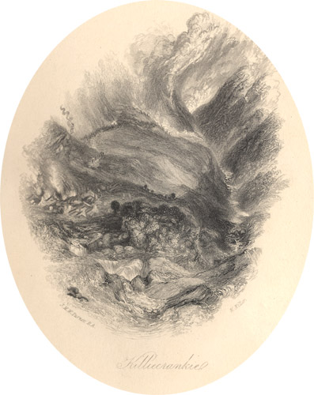

|
 Killiecrankie, engraved by W. Miller after J.M.W. Turner (1836).
From: The Prose Works of Sir Walter Scott, Bart. Vol. 25 (Edinburgh: Cadell, 1836). On 27 July 1689, a Jacobite army led by John Graham of Claverhouse ('Bonnie Dundee') defeated government forces under General Hugh Mackay at the Pass of Killiecrankie (near Pitlochry). Claverhouse himself, however, was killed during the battle, as were one third of his soldiers, and the seriously weakened Highlanders were subsequently defeated at the battle of Dunkeld. |